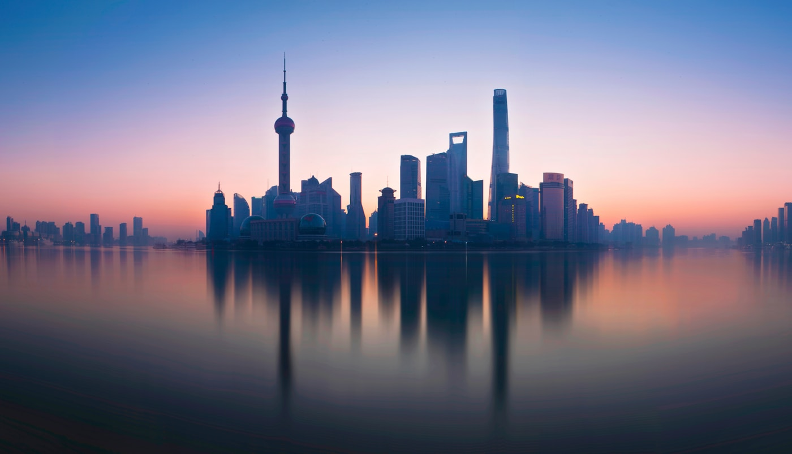
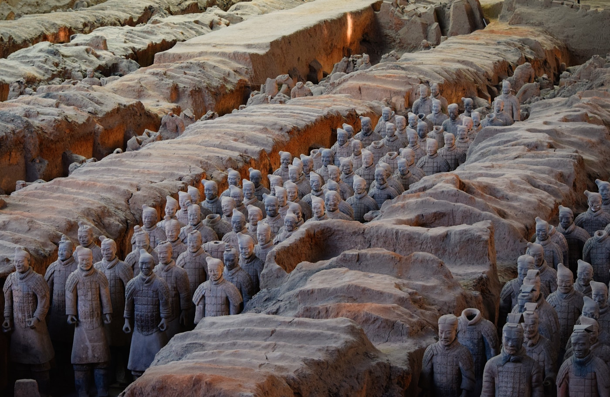
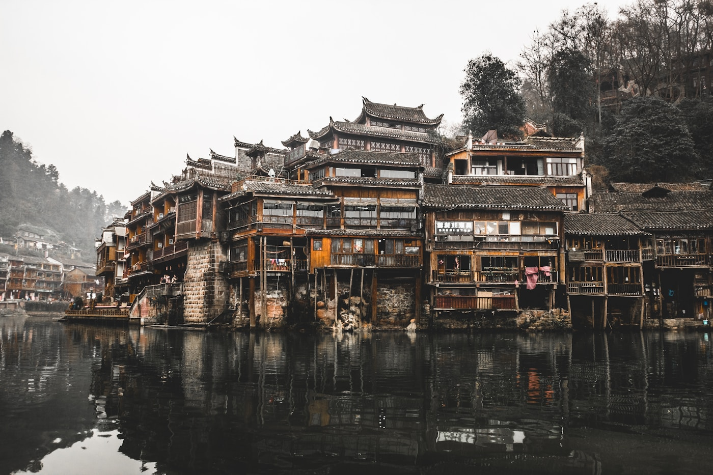
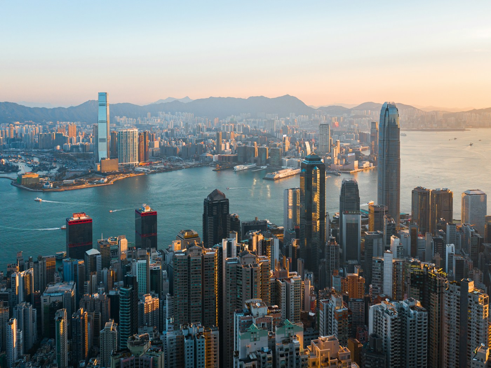

Discover the Wonders of China
Professional local guides ready to show you the best of Chinese culture, history, and natural beauty.
Professional local guides ready to show you the best of Chinese culture, history, and natural beauty.
Comprehensive travel solutions tailored for international visitors
Personalized itineraries designed around your interests, budget, and travel preferences. Private, small-group, and themed tours available.
Handpicked hotels and guesthouses across China, from luxury resorts to authentic local stays vetted for comfort and location.
Private transfers, train tickets, and seamless logistics planning to keep your trip on schedule and stress-free.
Authentic Chinese cuisine tours, from street food to Michelin-starred restaurants — guided tastings with cultural context.
24/7 support, visa guidance, and emergency assistance throughout your journey. We provide local emergency contact numbers for each destination.
Book a professional local guide by the hour or by the day. Our guides are certified, English-speaking, and deeply knowledgeable about Chinese culture and history.
Explore China's most iconic cities — handpicked attractions and local travel tips for foreign visitors
Capital city where 500+ years of imperial history unfold. Walk the Great Wall, explore the Forbidden City, and experience authentic Peking duck cuisine.

The "Pearl of the Orient" — a dazzling blend of colonial architecture, futuristic skyscrapers, and world-class dining along the Huangpu River.

The starting point of the Silk Road — famous for the Terracotta Army, ancient city walls you can bike around, and vibrant Muslim food streets.

"桂林山水甲天下" — Cruise the Li River through limestone karst mountains, then explore Yangshuo's riverside streets and rural cycling routes.
The laid-back capital of Sichuan — meet giant pandas in their natural habitat, explore ancient tea houses, and brave the world's spiciest cuisine.

The former British colony — a vertical city of skyscrapers, street food, and world-class shopping on both sides of Victoria Harbour.
China's "Summer Capital" — cool mountains, dramatic waterfalls, and rich ethnic minority culture in Guizhou province.
Dedicated professionals who bring China's cities to life — with real photos, contact details, and verified reviews
Senior Beijing Specialist
Based in Beijing
+86 138-0013-8001
"Michael's knowledge of the Forbidden City was incredible. He made 600 years of history come alive for our family!" — Sarah M., USA, Mar 2025
"Best guide we've ever had. Organized, knowledgeable, and great with kids." — James T., UK, Feb 2025
Shanghai & East China Expert
Based in Shanghai
+86 138-0013-8002
"Emily showed us the best local food in Shanghai. Her xiaolongbao tasting tour was unforgettable!" — David L., Canada, Apr 2025
"Perfect blend of history and modern Shanghai. Highly recommended!" — Anna K., Australia, Jan 2025
Xi'an & Ancient History Guide
Based in Xi'an
+86 138-0013-8003
"David picked us up at the train station and made our Xi'an trip seamless. His Terracotta Army tour was fascinating." — Robert H., Germany, Mar 2025
"Great storytelling about the Silk Road. We loved the city wall biking trip!" — Lisa W., Singapore, Feb 2025
Chengdu & Sichuan Nature Guide
Based in Chengdu
+86 138-0013-8004
"Sophia got us into the panda base before the crowds. We saw pandas eating bamboo — dream come true!" — Emma R., USA, May 2025
"Her hot pot dinner recommendation was the best meal we had in China." — Thomas B., France, Apr 2025
Guilin & Yangshuo Scenic Guide
Based in Guilin
+86 138-0013-8005
"Jenny arranged the perfect Li River cruise and Yangshuo cycling day. Breathtaking scenery!" — Peter G., Netherlands, Mar 2025
"She speaks perfect English and knows every hidden gem in Yangshuo." — Maria S., Spain, Feb 2025
Hong Kong & Peninsula Expert
Based in Hong Kong
+852 9123-4567
"Kevin's dim sum tour was the highlight of our Hong Kong trip. He knows the best local spots!" — Jennifer L., Canada, Apr 2025
"Great recommendations for off-the-beaten-path places in Hong Kong." — Michael P., USA, Mar 2025
Guizhou & Ethnic Culture Guide
Based in Guiyang
+86 138-0013-8007
"Lucy's knowledge of ethnic minority cultures in Guizhou is remarkable. The Miao village overnight was unforgettable." — Anna M., Italy, May 2025
"She made the trip to Huangguoshu Waterfall effortless. A true professional!" — William C., UK, Apr 2025
Real experiences from travelers around the world
"Our guide made our trip to China unforgettable. He was incredibly knowledgeable about Chinese history and culture. We felt like we had a friend showing us around."
"The customized tour exceeded all expectations. From the Terracotta Army to the beautiful landscapes of Guilin, every moment was perfectly planned."
"Excellent service from start to finish. Our guide was friendly, professional, and spoke perfect English. We will definitely use China Travel Guide again!"
Tell us about your travel plans and we'll create a personalized itinerary